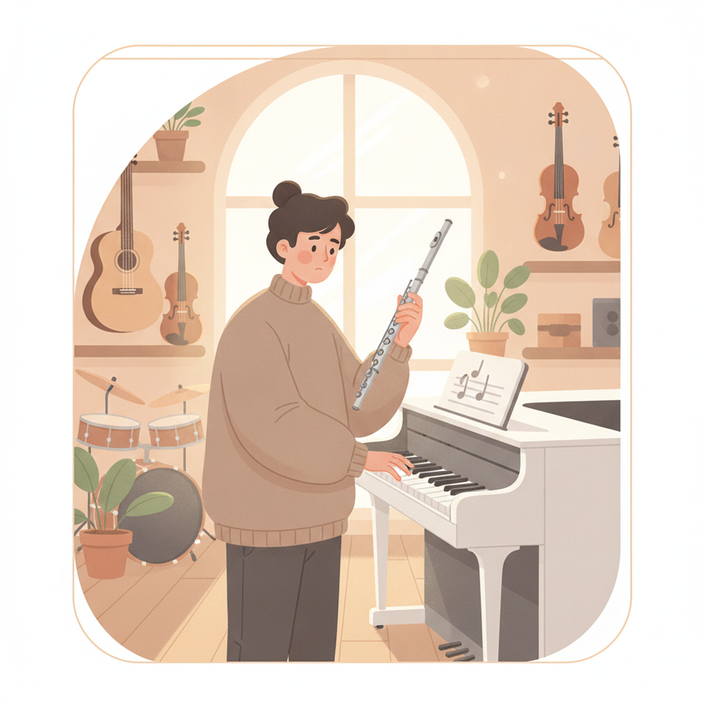
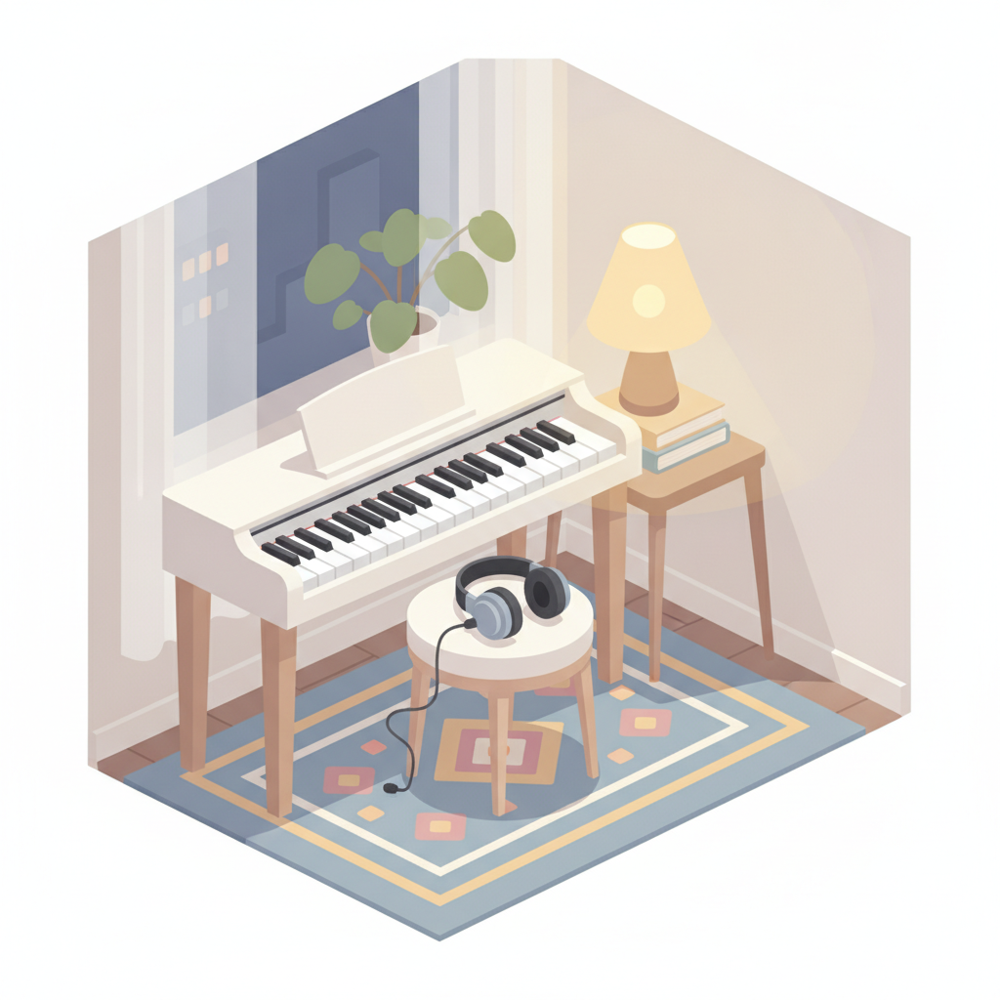
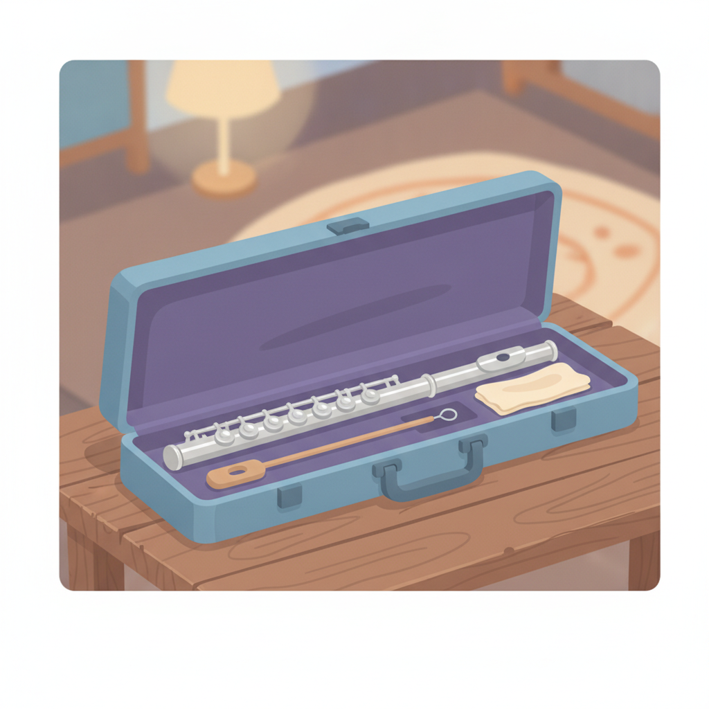

初學要準備什麼？電鋼琴、租琴與基本配件怎麼選
還沒上第一堂課，就先花五位數把琴搬回家，會不會太衝動？老實說，會。這篇帶你看哪些該花、哪些可以先省。
初學裝備不用一次到位，原則只有一個——先求「回家練得起來」。學鋼琴，一台有配重鍵盤的入門電鋼琴或先租琴，就足夠撐過第一年；學長笛，先租或選入門等級的學生笛就好，不必急著買高階琴。
把大錢留到熱情確定之後再花。下面一項一項看。

「老師，我要不要先買琴？」這大概是我被問過最多次的問題之一，通常出現在第一堂課之前，語氣裡混著興奮，還有一點點焦慮。我懂。琴不便宜，買錯了不只是錢的事，還會變成家裡那件最貴的置物架。所以在你掏錢之前，先聽我講兩個真實的開場。
兩種學生，兩種開場
我看過一種家長，孩子還沒上第一堂課，家裡就先搬進一台平台鋼琴，客廳重新規劃、地板重新評估，陣仗非常大。結果呢？孩子三個月後興趣轉向，那台琴從此安靜地站在客廳，上面慢慢堆起了相框和全家福。也看過另一種：先用一台入門電鋼琴撐過整整第一年，每天戴著耳機練，確定自己是真的喜歡、真的會一直彈下去，才升級成傳統鋼琴。你猜哪一種學得久？後者。因為裝備是跟著熱情走的，不是反過來讓熱情被裝備綁架。對了，如果你連要學鋼琴還是長笛都還沒定案，先別急著看琴，回頭讀讀我寫的鋼琴與長笛的挑選思路，把樂器定了再回來。
初學電鋼琴怎麼選？鍵盤配重是底線
先講我最常被問的：「老師，初學電鋼琴推薦哪一台？」品牌型號年年在變，我不想給你一張很快就過期的清單，但有一條底線永遠不變——鍵盤要有配重。真鋼琴的琴鍵是有重量的，手指按下去要對抗琴槌的機械結構，力度的大小直接反映在音量和音色上；一台沒有配重的鍵盤，按起來像打字，練一年下來手指是「飄」的，之後換到真琴會整個重來。這很划不來。所以挑初學電鋼琴，規格表上認明「88 鍵全配重」（hammer action、漸進式配重這類字眼），至於音色數量、自動伴奏那些功能，都是其次。預算的量級呢？入門的全配重電鋼琴，大約就是一支中階手機的價位。不算小錢，但比你想像中親切。

電鋼琴、傳統鋼琴，還是租琴？
三條路我都替學生規劃過，取捨其實很清楚。電鋼琴贏在現實條件——不用調音、體積小、可以戴耳機夜練，對公寓族和下班才有空的成人特別友善（很多成人學生都是這樣開始的，如果你還卡在「這年紀才學會不會太晚」，先看看我寫的成人零基礎學音樂的年齡迷思，答案是不會）。傳統鋼琴贏在聲音和觸鍵的細膩層次，那是目前的電鋼琴還模仿不完全的，但它需要空間、需要定期調音，也需要你對「會一直學下去」有把握。租琴則是中間解：付月租金換一台直立鋼琴回家，不少琴行還有「租後買斷、租金折抵」的方案，很適合「八成會長期學，但想再觀察一下」的家庭。我的建議很簡單。第一年，電鋼琴或租琴，二選一；一年之後還在彈、而且越彈越有味道，再認真去試傳統琴。到那時，你的耳朵和手指都會告訴你值不值得。
學長笛要買長笛嗎？先租或入門學生笛就好
長笛這邊，問法通常是：「老師，學長笛要買長笛嗎？可以先用租的嗎？」可以，而且我常常主動建議先租。長笛不像鋼琴有電子版可以過渡，遲早要有一支實體的琴，但「遲早」不等於「現在」。入門等級的學生笛（廠牌目錄上寫 student model 的那種）做工已經足夠陪你走完前幾年，量級也差不多是一支中階手機；樂器行和部分教室有月租方案，先租三個月到半年，確定嘴型和興趣都穩了再買，是很聰明的路徑。二手呢？可以看，但水比較深——按鍵的密合度、皮墊的狀況，外行光看外觀看不出來，一支擦得亮晶晶的二手笛，按鍵可能早就漏氣。所以我都跟學生說，想收二手琴，把連結丟給我，或直接帶來讓我吹吹看。有人把關，差很多。

基本配件：該買的其實不多
琴定了之後，剩下的配件一隻手數得完：
- 節拍器——手機免費 app 就夠用，實體的先不用買。
- 譜架——學長笛必備；電鋼琴通常內建譜板，可以先省。
- 可調高度的琴椅——比你想的重要。椅子太高太低，手腕和肩膀都會代償；家裡現有的椅子先頂著也行，但要墊到對的高度。
- 長笛的通條與擦拭布——每次吹完都要清，這關係到琴的壽命，買琴或租琴通常會附。
就這樣。至於延音踏板升級款、專業琴袋、防潮設備，等你需要的那天，自然會知道。
買琴之前，先傳個訊息給我
講到最後，我想給你一個最省錢的建議：掏錢之前，先跟我聊一聊。把你的預算、家裡的空間、想學的樂器丟過來，我會直接告訴你這個階段該買什麼、租什麼、什麼先不要碰。學生問我這題，不用錢。買錯琴，才貴。
常見問題
初學電鋼琴一定要 88 鍵嗎？
建議是。初期的曲子確實用不到全部音域，但 88 鍵機種幾乎都搭配全配重鍵盤，而配重才是重點——它讓你從第一天就練出正確的手指力度。少於 88 鍵的機種多半也省掉了配重，價差卻不大，直接一步到位比較划算。
可以先用手捲琴或電子琴代替嗎？
撐一、兩週的過渡可以，長期不建議。手捲琴和無配重電子琴按起來沒有重量回饋，練不出力度控制，養成的手感之後要花更多時間修正。等於先繞了一段遠路。
長笛可以先用租的嗎？
可以，而且很推薦。樂器行和部分教室都有學生笛的月租方案，先租三個月到半年，確定嘴型穩定、興趣也穩定，再買自己的琴。想收二手也可以，但按鍵密合度和皮墊狀況外行看不出來，最好請老師檢查過再下手。
快速重點
- 初期不用一次到位，先求「回家練得起來」就好。
- 初學電鋼琴認明 88 鍵全配重，預算量級大約一支中階手機。
- 第一年電鋼琴或租琴二選一，確定會長期學再考慮傳統鋼琴。
- 長笛先租或選入門學生笛，二手要請老師把關再下手。
- 配件先備節拍器 app、譜架、對的椅高，其他等需要再說。